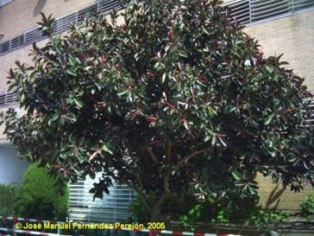
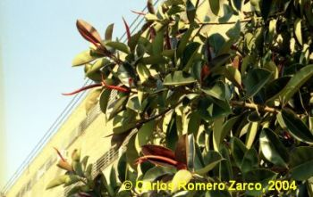
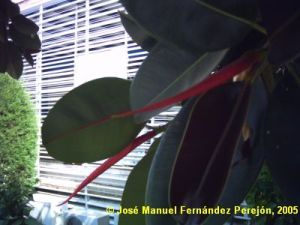

|
Ficus
elastica Roxb. ex Hornem.,
Suppl. Hort. Bot.
Hafn. (1819)
|
Moráceas |
| Árbol del caucho, gomero, ficus | Árbol perennifolio |
|
Árbol perennifolio,
monoico,
de 6,5 m [puede alcanzar 50-60 m (1)], tronco de 78 cm
de
circunferencia, que puede llegar a varios metros de
diámetro,
corto y grueso, a veces muy ramificado desde poca
altura; corteza
grisácea, lisa, con ranuras horizontales.
Hojas alternas,
simples,
pecioladas, con estípulas elípticas caducas,
glabrescentes; lámina de 30 x 15 cm, entera,
oblongo-elíptica, con el ápice acuminado o apiculado y
la
base redondeada, borde liso, coriácea; nervio
principal
destacado y nerviaciones secundarias dispuestas en
ángulo recto,
paralelas hasta el borde; haz verde oscuro, envés
verde
pálido.
Inflorescencias solitarias: de tipo
sicono, de forma esférica o
piriforme, con las flores colocadas en la cavidad
interna.
Flores unisexuales,
muy
pequeñas, actinoformas, haploclamídeas; cáliz con
4 sépalos; flores masculinas con 4 estambres, las
femeninas
hipoginas, con un pequeño pistilo formado por dos
hojas
carpelares, con un solo rudimento seminal.
Infrutescencia
(sicono o higo) de c.
1 cm, globosa.
Frutos de
tipo aquenio (pipas),
encerrados en el sicono. La parte carnosa no es
producida por el
ovario, sino por el receptáculo de la flor, que está
muy
desarrollado.
|

 |
|  Vainas rojizas cubriendo las hojas jóvenes |
Observaciones:
El nombre
genérico procede del nombre latino de la higuera; el
específico procede del latín elasticus = elástico, en
alusión al látex que produce, de donde se obtenía
una sustancia elástica parecida al caucho. Este látex
resulta tóxico puesto que tiene una acción irritante
sobre la piel, por acción de las furocomarinas.
También
el simple contacto con estas plantas puede producir
fotosensibilidad,
que se muestra en forma de ampollas, por lo que
debemos ir con cuidado
a la hora de manipular estas plantas y en ningún caso
ingerir
sus hojas o ramas.
En general es muy utilizada en jardinería, especialmente en su época juvenil como plantas de maceta en interior. Plantadas sobre el suelo, con el tiempo, la mayoría de ellas si las condiciones son propicias, alcanzan un crecimiento natural convirtiéndose en verdaderos árboles con grandes sistemas radiales, por lo que sus prolongadas raíces pueden dañar las construcciones humanas |
| Área de origen.- Sur de Asia, desde el Himalaya hasta la península Malaya, Sumatra y Java | |
| Uso en el campus: 1
ejemplar que fue
plantado en los años 70, cuando se construyó la facultad
de matemáticas. |
Localización: |
| (1)
López González,G.
(1982).
Guía de Incafo de los
árboles y arbustos de la
Península Ibérica. Incafo, Madrid. |
|
| José
Manuel
Fernández Perejón & Carlos Romero Zarco, 2005 |
|